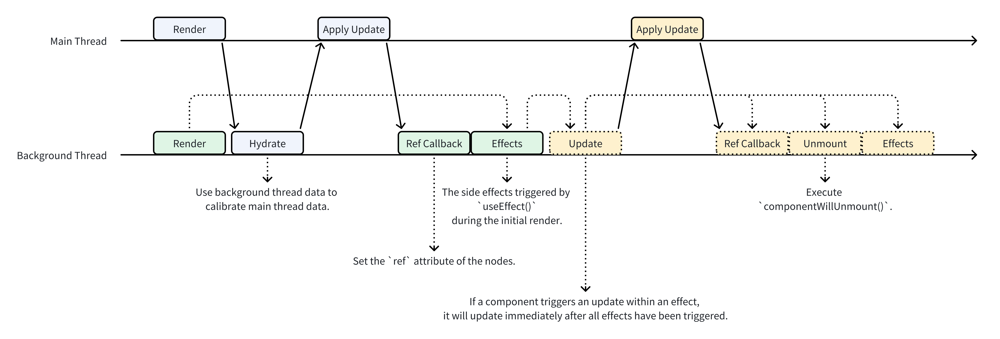
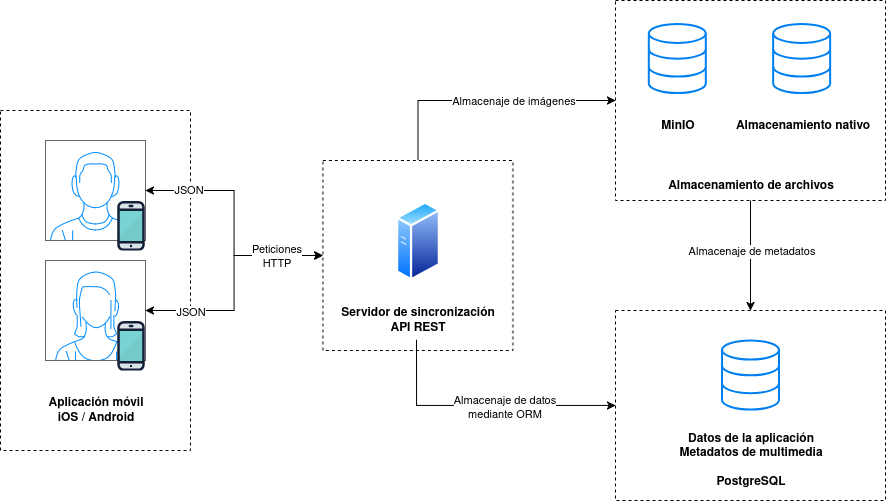

Tenemos que describir de manera concisa y concentrada el motivo del trabajo, objetivo y conclusiones a las que se llega. Esta sección tiene que estar en inglés y en español.
Personas que me han apoyado en la realización de este trabajo.
Hoy en día, en la era de la digitalización, todos tenemos móviles con cámaras de alta resolución y grandes almacenamientos que nos permiten capturar y guardar una gran cantidad de fotografías y vídeos, espacio el cual, aunque parezca enorme, todos sabemos que se acaba terminando. Para ello es que se ofrecen distintos tipos de servicios en la nube que nos permiten tener todos esos archivos multimedia guardados en un lugar desconocido para el usuario promedio junto con la facilidad de la sincronización automática.
Aún así, este espacio también se acaba, junto con la desventaja de que hay que pagar por guardar esos archivos en ese lugar desconocido. Es por eso que este proyecto busca ofrecer una solución a este problema, permitiendo alojar un servidor de almacenamiento y sincronización en cualquier servidor o computadora personal.
Durante un periodo vacacional, se presentó un caso práctico en el que un familiar enfrentaba dificultades debido a que su almacenamiento en Google Fotos se había acabado. Este problema planteó la necesidad de implementar un sistema que permitiera la transferencia automática de fotografías desde un dispositivo móvil a un portátil antiguo, aprovechando la conectividad de la red wifi doméstica.
Es por ello que me decidí a solucionar esta problemática mediante el diseño e implementación de una solución tecnológica adecuada, eficiente y segura que permita a cualquier usuario tener un sistema de sincronización de multimedia entre dispositivos, teniendo un servidor central en el que guardar las fotos.
En infinitivo y concisos. Siguiendo las siglas SMART (Specific, Measurable, Achievable, Relevant, Time-bound). Mejor tener objetivos generales y después específicos.
Mover después de Motivación. Para definir los objetivos de nuestro proyecto, primero vamos a definir unos objetivos generales de los cuales se derivarán los específicos.
OG1: Desarrollar un sistema multiplataforma y multiusuario para la compartición de archivos multimedia.
OG2: Realizar un proyecto Open-Source
OG3: Proporcionar una solución segura y eficiente para la sincronización de archivos multimedia.
OG4: Desarrollar un sistema fácilmente escalable
OG6: Desarrollar una solución nativa para las aplicaciones móviles más utilizadas.
Qué se ha hecho hasta ahora en este campo, qué tecnologías se han utilizado, qué problemas se han encontrado, qué soluciones se han propuesto.
En este apartado se presenta un análisis del estado del arte en el ámbito de las bibliotecas de fotos de código abierto (FOSS). Se examinan las principales soluciones disponibles, sus características técnicas, fortalezas y limitaciones, así como las tendencias actuales en el sector. Dado que uno de los objetivos del proyecto es desarrollar un producto que sea de código abierto, la comparación se centra en soluciones FOSS que ya están en el mercado y que han sido ampliamente adoptadas por la comunidad, lo cual nos va a permitir desarrollar una comparación mas extensa sobre cómo están organizados los proyectos para facilitar su mantenimiento y escalabilidad, así como las tecnologías que utilizan para ofrecer sus servicios.
Además, se realiza un estudio sobre las tecnologías que vamos a utilizar en el proyecto en comparación con las alternativas y las que ya se utilizan en los proyectos analizados.
En el panorama actual de las bibliotecas de fotos de código abierto, existe una amplia variedad de soluciones que buscan ofrecer alternativas libres y gratuitas a los servicios propietarios como Google Photos o iCloud. Este análisis del estado del arte se centra en las tres soluciones más populares según el número de estrellas en GitHub: Immich, PhotoPrism y Ente.
El ecosistema de bibliotecas de fotos de código abierto ha experimentado un crecimiento significativo en los últimos años, impulsado por las crecientes preocupaciones sobre la privacidad de los datos y la dependencia de servicios en la nube propietarios. Según el análisis comparativo realizado por Meichthys [?], existen más de 16 proyectos activos que ofrecen diferentes enfoques y características.
Las soluciones analizadas se pueden clasificar en tres categorías principales:
Immich se posiciona como la solución más popular con 66,988 estrellas en GitHub. Desarrollado principalmente en TypeScript, utiliza una arquitectura de microservicios moderna que incluye:
Fortalezas técnicas:
Limitaciones:
PhotoPrism, con 37,499 estrellas en GitHub, representa la solución más madura del ecosistema. Desarrollado en Go, utiliza una arquitectura monolítica que ofrece:
Fortalezas técnicas:
Limitaciones:
Ente, con 19,431 estrellas en GitHub, se distingue por su enfoque en la privacidad. Utiliza Flutter para ofrecer consistencia multiplataforma:
Fortalezas técnicas:
Limitaciones:
| Característica | Immich | PhotoPrism | Ente |
| Estrellas GitHub | 66,988 | 37,499 | 19,431 |
| Lenguaje Principal | TypeScript | Go | Dart |
| Arquitectura | Microservicios | Monolítica | Cliente-Servidor |
| Base de Datos | PostgreSQL | SQLite/MySQL | PostgreSQL |
| Aplicación Móvil | Flutter (8/10) | PWA (4/10) | Flutter (8/10) |
| Reconocimiento IA | 9/10 | 9/10 | En desarrollo |
| Múltiples Usuarios | 8/10 | No soportado | 9/10 |
| Búsqueda | 9/10 | 8/10 | 6/10 |
| Privacidad | 7/10 | 8/10 | 10/10 |
| Facilidad de Contribución | Alta | Baja | Baja-Media |
El análisis de rendimiento revela diferentes enfoques optimizados para casos de uso específicos:
Immich sobresale en escalabilidad y características avanzadas, pero requiere más recursos del servidor. Su arquitectura de microservicios permite el escalado horizontal y la distribución de carga de trabajo, especialmente beneficial para el procesamiento de IA.
PhotoPrism ofrece la mejor eficiencia de recursos gracias a Go y su arquitectura monolítica, siendo ideal para instalaciones en hardware limitado. Su procesamiento de archivos es especialmente eficiente para fotógrafos profesionales.
Ente equilibra el rendimiento con la seguridad, trasladando el procesamiento al cliente para mantener la privacidad, aunque esto introduce latencia en las operaciones de cifrado/descifrado.
El análisis del estado del arte revela varias tendencias importantes:
El ecosistema de bibliotecas de fotos FOSS presenta tres paradigmas distintos que abordan diferentes necesidades del mercado. Immich representa la innovación y escalabilidad, PhotoPrism la madurez y eficiencia, mientras que Ente pionerea en privacidad y seguridad.
Esta diversidad de enfoques indica un mercado en maduración donde no existe una solución única, sino que cada proyecto optimiza para casos de uso específicos. La elección entre estas soluciones depende fundamentalmente de los requisitos de escalabilidad, privacidad, recursos disponibles y experiencia técnica del usuario final.
El análisis sugiere que el futuro del sector se dirigirá hacia la convergencia de estas características, buscando soluciones que combinen la escalabilidad de Immich, la eficiencia de PhotoPrism y la privacidad de Ente.
Además, las nuevas tecnologías como pueden ser React Native o en este caso Lynxjs, pueden aportar un mejor desarrollo de una aplicación móvil nativa, que permita una mejor experiencia de usuario y un mejor rendimiento en dispositivos móviles sin perder características nativas de las plataformas.
No se ve en ningún proyecto entre los más populares que haga uso de Rust. Aunque hay una tendencia a utilizar Go, el cual es un lenguaje que es más sencillo y proporciona un rendimiento muy bueno, Rust ofrece ventajas significativas en términos de seguridad y rendimiento, especialmente para aplicaciones que requieren un alto grado de concurrencia y eficiencia en el manejo de memoria. Esto sugiere una oportunidad para explorar Rust como una alternativa viable para el desarrollo de bibliotecas de fotos FOSS en el futuro.
Por lo general, se suele hacer uso de un almacenamiento de objetos ya implementado, como puede ser MinIO, que es compatible con S3. Esto permite una mayor escalabilidad y flexibilidad en el almacenamiento de grandes volúmenes de datos, lo cual es esencial para aplicaciones que manejan grandes bibliotecas de fotos. Aún así, sería interesante explorar la posibilidad de implementar un almacenamiento de objetos propio, ya que esto podría ofrecer ventajas en términos de personalización y optimización para casos de uso específicos como puede ser el caso en el que ya se tiene un almacenamiento de archivos en el servidor y se quiere aprovechar para almacenar las fotos.
Tal y como se puede ver en el apartado anterior, hay una tendencia general a usar Typescript o Go para el desarrollo de el servidor de sincronización de multimedia y Flutter o PWA para el desarrollo de aplicaciones móviles. Sin embargo, existen otras tecnologías que pueden ofrecer ventajas significativas en términos de rendimiento, seguridad y facilidad de desarrollo.
En este caso, se va a estudiar el uso de Rust para el desarrollo del servidor de sincronización de multimedia, ya que ofrece un alto rendimiento y seguridad en la gestión de memoria, lo cual es crucial para aplicaciones que manejan grandes volúmenes de datos como las bibliotecas de fotos. La seguridad que nos da Rust con su modelo de errores antes de la compilación nos va a permitir desarrollar un proyecto de código abierto más robusto y menos propenso a errores, lo cual es esencial para mantener la confianza de los usuarios en la aplicación.
Se estudiarán las tecnologías disponibles para el desarrollo de la aplicación móvil, entre ellas React Native, Flutter, PWA’s y Lynxjs. Cada una de estas tecnologías tiene sus propias ventajas y desventajas, y la elección de la tecnología adecuada dependerá de los requisitos específicos del proyecto, como la necesidad de una experiencia de usuario nativa, el rendimiento en dispositivos móviles y la facilidad de desarrollo.
El servidor de sincronización de multimedia es el componente central de la aplicación, encargado de gestionar la comunicación entre el cliente y el almacenamiento de fotos. Disponemos de una amplia variedad a la hora de elegir un lenguaje/framework para el desarrollo del servidor, cada uno con sus propias ventajas y desventajas.
Las principales soluciones serían:
Dado que para nuestro proyecto buscamos la solución más eficiente (tanto en términos de velocidad como recursos) y segura, el análisis se puede reducir a una comparación entre Go y Rust, lenguajes que ofrecen un alto rendimiento y seguridad en la gestión de memoria.
Rust y Go son dos lenguajes de programación modernos que han ganado una popularidad considerable en los últimos años, especialmente en el desarrollo de sistemas y aplicaciones de alto rendimiento. Aunque ambos comparten objetivos como la eficiencia y la concurrencia, sus filosofías de diseño y enfoques para resolver problemas difieren significativamente.
Rust es un lenguaje de programación de sistemas enfocado en la seguridad de memoria y la concurrencia. Su principal objetivo es ofrecer el rendimiento de C/C++ sin los problemas comunes de gestión de memoria, como los punteros nulos o las carreras de datos, gracias a su sistema de propiedad (ownership) y préstamos (borrowing).
Go (también conocido como Golang) es un lenguaje desarrollado por Google, diseñado para ser simple, eficiente y productivo, especialmente para la programación concurrente y de redes. Prioriza la simplicidad en su sintaxis y herramientas, facilitando una curva de aprendizaje suave.
Rust Rust implementa un sistema de gestión de memoria único basado en los conceptos de ownership, borrowing y lifetimes. Este sistema garantiza la seguridad de memoria en tiempo de compilación sin necesidad de un recolector de basura (Garbage Collector - GC). El sistema de gestión de memoria de Rust se basa en las siguientes reglas:
Gracias a ello, tenemos control preciso sobre la memoria, ausencia de pausas por GC, prevención de fugas de memoria y carreras de datos de forma estática. El compilador será muy estricto, lo que hará que prevengamos errores en tiempo de ejecución.
Todo este paradigma de programación es totalmente distinto a lo que estamos acostumbrados en otros lenguajes de programación como puede ser Java o c++/c, lo que puede llevar a una curva de aprendizaje más pronunciada, pero a largo plazo nos va a permitir desarrollar aplicaciones más seguras y eficientes.
Go Go utiliza un recolector de basura para la gestión automática de la memoria. Este GC está optimizado para baja latencia, aunque introduce ciertas pausas.
Rust Rust está diseñado para ofrecer un rendimiento comparable al de C y C++. Sus abstracciones de çoste ceroªseguran que las características de alto nivel no impongan una penalización en tiempo de ejecución. La ausencia de GC también contribuye a un rendimiento predecible. Rust ofrece varias abstracciones de coste cero como iterators, closures y async/await que permiten escribir código limpio y expresivo sin sacrificar el rendimiento. Además, su sistema de tipos y el modelo de propiedad permiten al compilador realizar optimizaciones agresivas que en otro lenguaje son imposibles.
En el rendimiento podemos distinguir entre dos aspectos:
Go Go ofrece un buen rendimiento, aunque generalmente no alcanza el nivel de Rust o C++ en tareas que requieren máxima optimización a bajo nivel. Su compilador es notablemente rápido. Go utiliza un modelo de concurrencia basado en goroutines y canales, lo que permite un alto grado de paralelismo sin complicaciones adicionales. Esto lo hace ideal para aplicaciones que requieren manejar múltiples tareas simultáneamente, como servidores web o servicios de red.
Rust Rust aborda la concurrencia con un enfoque en la seguridad (”fearless concurrency”). Su sistema de tipos y el modelo de propiedad previenen las carreras de datos en tiempo de compilación. Utiliza primitivas como async/await para la programación asíncrona, además de hilos de sistema operativo, consiguiendo paralelismo para la programación asíncrona. Rust permite la creación de hilos seguros y eficientes, y su modelo de propiedad garantiza que no haya condiciones de carrera. El compilador verifica en tiempo de compilación que no se acceda a datos compartidos de forma insegura gracias a su modelo de propiedad de variables, lo que reduce significativamente los errores comunes en la programación concurrente.
Go La concurrencia es una de las características estrella de Go. Se basa en goroutines (hilos ligeros gestionados por el runtime de Go) y canales (channels) para la comunicación entre goroutines, siguiendo el paradigma de Çomunicación Secuencial de Procesos”(CSP). Éste se basa en la idea de que las goroutines se comunican entre sí a través de canales sin acceder a las mismas posiciones de memoria (cada goroutine tiene su propia copia de el mensaje) y reduce el riesgo de condiciones de carrera. Si queremos tener una comunicación bidireccional, tendríamos que utilizar un enfoque más tradicional mediante mutexs o semáforos junto con locks, lo cual puede ser más complejo y propenso a errores.
Sintaxis y Curva de Aprendizaje
Rust La sintaxis de Rust es moderna y expresiva, pero su sistema de tipos y el modelo de gestión de memoria (ownership y borrowing) introducen una curva de aprendizaje considerablemente más pronunciada que la de Go. Ya se ha trabajado anteriormente con Rust, lo cual facilita el aprendizaje de este lenguaje. Además, la documentación oficial de Rust es muy completa y está bien estructurada, lo que ayuda a los nuevos usuarios a familiarizarse con el lenguaje.
Go Go fue diseñado con la simplicidad como uno de sus principios fundamentales. Su sintaxis es minimalista y fácil de aprender, especialmente para programadores con experiencia en lenguajes tipo C.
Sistema de Tipos y Abstracciones
Rust Rust posee un sistema de tipos estático, fuerte y muy rico, inspirado en lenguajes como Haskell. Incluye traits (similares a interfaces pero más potentes), genéricos avanzados, tipos de datos algebraicos (ADTs2 ) como enum y struct que, gracias a el pattern matching3 , y macros para metaprogramación.
Go Go tiene un sistema de tipos estático y simple. Utiliza interfaces para la polimorfismo de forma implícita (tipado estructural). Los genéricos fueron añadidos en la versión 1.18, lo que ha expandido sus capacidades de abstracción.
Rust Rust cuenta con Cargo, una herramienta de gestión de dependencias y construcción de proyectos muy elogiada. El repositorio oficial de paquetes es crates.io, que alberga una cantidad creciente de bibliotecas. Cargo además ofrece herramientas integradas para pruebas, documentación y gestión de versiones.
Go Go posee una excelente librería estándar que cubre muchas necesidades comunes, especialmente en networking y servicios web. Sus herramientas de desarrollo (formateo, testing, profiling) están integradas en la distribución del lenguaje. Utiliza módulos de Go para la gestión de dependencias.
Rust Rust no utiliza excepciones. El manejo de errores se realiza principalmente a través de los tipos Result<T, E> y Option<T> y el pattern matching exhaustivo, que obligan al programador a considerar los casos de éxito y error explícitamente.
Go Go maneja los errores retornándolos como el último valor de una función. Por convención, un error es un valor que satisface la interfaz error. Esto requiere comprobaciones explícitas if err != nil. El manejo de errores en este caso no es exhaustivo.
Resumen de Ventajas y Desventajas
Desventajas:
Desventajas:
Para este caso, cualquiera de las dos soluciones sería completamente válida. Go podría ser la mejor opción por su enfoque en la simplicidad y la facilidad de uso, especialmente para aplicaciones web y servicios de red. Sin embargo, Rust ofrece ventajas significativas en términos de seguridad de memoria y rendimiento, lo que lo convierte en una opción atractiva para aplicaciones que requieren alta concurrencia y eficiencia. En nuestro proyecto se busca alto rendimiento, seguridad, facilidad de contribuir al proyecto y un lenguaje sólido que no sea propenso a fallos. Es por esto que Rust es la mejor opción en nuestro caso.
Tal como se ha comentado anteriormente, Rust nos facilita seguridad en la ejecución del código gracias a su estricto compilador. Nos ofrece una gran variedad de funcionalidades sin coste en rendimiento junto con su sistema de propiedad y préstamos que nos permite gestionar la memoria de forma segura y eficiente, evitando errores comunes como las carreras de datos o los punteros nulos sin necesidad de un recolector de basura (GC).
Aunque la curva de aprendizaje de Rust es más pronunciada, los beneficios a largo plazo en términos de seguridad y rendimiento justifican esta inversión inicial.
Invertir en aprender este lenguaje no solo nos favorecerá para el desarrollo de este proyecto, sino que también nos proporcionará habilidades valiosas para futuros proyectos en el ámbito del desarrollo de software, el cual al final es uno de los objetivos de hacer un proyecto de este tamaño.
Trabajar con tecnologías y paradigmas de programación con las que no estamos familiarizados nos va a ayudar a mejorar nuestras habilidades y ampliar nuestro conocimiento en el desarrollo de software, lo cual es esencial para nuestro crecimiento profesional.
Para el desarrollo de aplicaciones móviles en el contexto de bibliotecas de fotos, existen varias tecnologías que ofrecen diferentes enfoques y características. A continuación se presenta un análisis detallado de las principales opciones disponibles.
React Native React Native, desarrollado por Meta (Facebook), permite crear aplicaciones móviles nativas utilizando JavaScript y React. Es ampliamente adoptado en la industria y cuenta con un ecosistema maduro.
Arquitectura y Funcionamiento:
Ventajas:
Desventajas:
Flutter Flutter, desarrollado por Google, utiliza el lenguaje Dart y un enfoque único de renderizado que dibuja todos los componentes desde cero utilizando Skia.
Arquitectura y Funcionamiento:
Ventajas:
Desventajas:
Progressive Web Apps (PWA) Las PWA representan una evolución de las aplicaciones web tradicionales, ofreciendo características similares a las aplicaciones nativas mediante tecnologías web estándar.
Arquitectura y Funcionamiento:
Ventajas:
Desventajas:
Lynxjs Lynxjs representa una tecnología emergente que promete combinar el desarrollo web con el rendimiento nativo, aunque su adopción y madurez son significativamente menores que las alternativas establecidas.
Arquitectura y Funcionamiento:
Ventajas:
Desventajas:
| Criterio | React Native | Flutter | PWA | Lynxjs |
| Rendimiento | 7/10 | 9/10 | 5/10 | 8/10* |
| Ecosistema | 9/10 | 8/10 | 8/10 | 3/10 |
| Curva Aprendizaje | 6/10 | 7/10 | 9/10 | 7/10 |
| Tamaño App | 6/10 | 5/10 | 9/10 | 8/10* |
| Acceso Nativo | 9/10 | 9/10 | 4/10 | 8/10* |
| Desarrollo Rápido | 8/10 | 9/10 | 9/10 | 6/10 |
| Estabilidad | 9/10 | 8/10 | 8/10 | 4/10 |
| Comunidad | 9/10 | 8/10 | 7/10 | 2/10 |
| *Datos basados en especificaciones, experiencia limitada
| ||||
Para aplicaciones de gestión de fotos, ciertos aspectos del rendimiento son particularmente críticos:
Dado que el proyecto busca crear una biblioteca de fotos FOSS competitiva, la elección de tecnología móvil debe considerar:
Conclusiones Basándose en el análisis comparativo y los requisitos específicos del proyecto:
Flutter es una opción sólida por las siguientes razones:
React Native podría ser la mejor opción si se prioriza:
PWA es una mala opción ya que:
Lynxjs es una opción arriesgada aunque ofrece ventajas como:
Para el desarrollo de este proyecto se va a optar por usar Lynxjs.
Aunque es una elección que puede parecer arriesgada, se ha considerado que el rendimiento optimizado y la familiaridad con JavaScript/TypeScript son factores clave para el éxito del proyecto. Además, el hecho de que Lynxjs esté respaldado por TikTok sugiere un compromiso a largo plazo con la tecnología, lo que puede ofrecer estabilidad y actualizaciones continuas.
Se ha descartado React Native ya que Lynxjs ofrece prácticamente las mismas ventajas, pero con un rendimiento optimizado gracias a componentes específicos optimizados, un tamaño de aplicación más reducido y un acceso más directo a las APIs nativas del dispositivo.
Flutter aun ofreciendo una gran cantidad de ventajas se ha descartado por lo siguiente:
Cabe destacar que Flutter habría sido la mejor elección si el objetivo del proyecto no fuera crear una aplicación FOSS, ya que el ecosistema de Typescript y JavaScript es más amplio y maduro, lo que facilita la integración con bibliotecas y herramientas existentes.
Tecnologías no nombradas Durante el análisis nos hemos centrado en aquellas tecnologías que son más populares y ampliamente utilizadas en la industria, pero existen otras opciones que podrían ser consideradas dependiendo de los requisitos específicos del proyecto como podría ser el desarrollo nativo (Kotlin/Java para Android y Swift/Objective-C para iOS) o Kotlin Multiplatform.
Se han descartado debido a la alta curva de aprendizaje que tienen ambas soluciones en comparación con las anteriormente nombradas que usan lenguajes de programación más usados. Destacar que, aunque Kotlin Multiplaform nos ofrece una de las mejores alternativas para implementar en varias plataformas (ya que nos permite compartir código entre Android, iOS y web gracias a Jetpack Compose, implementando de forma sencilla y totalmente nativa funcionalidades específicas), la falta de madurez en su ecosistema y la complejidad de su implementación lo hacen menos atractivo para nuestro proyecto.
Ya que es un tfg de desarrollo describimos lo realizado y cómo, así como los resultados obtenidos.
Para el desarrollo de este proyecto se va a hacer uso de la metodología ágil Scrum. Esta metodología se basa en el desarrollo iterativo e incremental, lo que permite una mayor flexibilidad y adaptación a los cambios durante el proceso de desarrollo.
Se ha optado por el uso de Scrum en vez de otra metodología ágil como Kanban o XP (Extreme Programming) o alguna metodología tradicional ya que se ha utilizado anteriormente y se considera que es con la que más cómodo y eficaz se va trabajar.
Tal y como se explica en la guía oficial de Scrum [?], Scrum es un marco de trabajo ágil que se utiliza para gestionar proyectos complejos y adaptarse a los cambios de manera rápida y eficiente. Se basa en la colaboración entre equipos multidisciplinarios, la entrega continua de valor y la mejora continua. Scrum se centra en la entrega de incrementos de producto funcionales en ciclos cortos, lo que permite a los equipos recibir retroalimentación temprana y ajustar su enfoque según sea necesario. Esto es especialmente útil en proyectos donde los requisitos pueden cambiar con frecuencia o donde la incertidumbre es alta.
Scrum se basa en una serie de roles, eventos y artefactos que ayudan a los equipos a organizar su trabajo y colaborar de manera efectiva. Los roles incluyen el Product Owner (responsable de la visión del producto), el Scrum Master (facilitador del proceso) y el equipo de desarrollo (responsable de la entrega del producto). Los eventos incluyen las reuniones diarias, las revisiones de sprint y las retrospectivas, que permiten a los equipos reflexionar sobre su trabajo y mejorar continuamente.
Aunque, tal y como se ve, Scrum está muy enfocado a equipos, también es posible utilizarlo con un equipo muy pequeño o incluso con una sola persona, realizando los mismos eventos pero sin la necesidad de tener un equipo de desarrollo. Éste es el enfoque que se le va a dar a este proyecto. Una buena práctica de Scrum es documentar todas las reuniones y tomas de decisiones que se toman a lo largo de la vida del proyecto, ya que esto ayuda a tener una mejor organización y a poder ver cómo ha ido evolucionando el proyecto a lo largo del tiempo. Es por ello que se van a documentar todas las decisiones que se tomen y los cambios que se realicen en el desarrollo.
Tal y como se comenta en la guía de Scrum, durante el desarrollo del proyecto se van a generar varios artefactos:
De esta manera buscamos al tener un objetivo de producto claro y definido en los sprints. Aunque el producto sufra cambios después, queremos intentar estimar lo mejor posible y, sobre todo, terminar los sprints con un producto con valor, tal y como se dice en la guía ‘A product is a vehicle to deliver value. It has a clear boundary, known stakeholders, well-defined users or customers. A product could be a service, a physical product, or something more abstract.’
Separaremos el desarrollo en distintos sprints, cada uno de ellos con una duración de dos semanas.
Durante cada sprint se seleccionarán las historias de usuario5 al principio del sprint generando así el Sprint Backlog correspondiente a ese sprint, se realizarán las tareas necesarias para completarlas y al final del sprint se realizará una revisión y una retrospectiva del mismo, donde se evaluará lo que se ha hecho, cómo se puede mejorar y se planificará el siguiente sprint dependiendo del estado del recién terminado.
Gracias a esta metodología conseguimos tener una organización muy clara de lo que se va a hacer, cómo se va a hacer y cuándo se va a hacer.
Para el desarrollo de este proyecto se ha buscado utilizar tecnologías que sean lo más eficientes y rápidas posibles, pero a la vez que sean seguras y escalables. Se ha buscado un equilibrio entre rendimiento y facilidad de uso, ya que el objetivo principal es conseguir un producto funcional y eficiente.
Para la parte de servidor se va a hacer uso de uno de los lenguajes más venerados en la actualidad en el mundo de la programación, Rust.
Rust es un lenguaje de programación de sistemas que se centra en la seguridad, el rendimiento y la concurrencia. Se ha convertido en una opción popular para el desarrollo de aplicaciones de alto rendimiento y sistemas críticos. Aunque Rust es un lenguaje de bajo nivel, su sintaxis es muy similar a la de otros lenguajes de programación como C++ o Java, lo que facilita su aprendizaje para los programadores que ya tienen experiencia en estos lenguajes, permitiendo un desarrollo más seguro, rápido y eficiente.
¿Por qué la elección de este lenguaje para el desarrollo del servidor de sincronización?
Haremos uso del framework de aplicaciones web Axum.
Axum es un framework de aplicaciones web construido sobre Tokio, una biblioteca de programación asíncrona para Rust. Axum se centra en la simplicidad y la facilidad de uso, lo que lo convierte en una excelente opción para desarrollar aplicaciones web rápidas y eficientes. Aunque hay varios frameworks más eficientes en términos de velocidad a la hora de realizar benchmarks6 7, algunos de ellos tienen un tiempo de compilación demasiado alto, por lo que puede llegar a hacer más lento el desarrollo. Además, ninguno de los demás frameworks de Rust tiene una comunidad tan activa como la de Axum ni una documentación tan completa.
Axum al estar desarrollado sobre la librería de Tokio8 , garantiza un soporte a largo plazo que otros frameworks no garantizan. Además, es la librería más descargada mensualmente para aplicaciones web en Rust.
Como se puede ver en los benchmark hay frameworks de otros lenguajes que pueden parecer más sencillos que Rust que nos dan el mismo o mejor rendimiento, pero tal y como se ha comentado anteriormente, el punto principal de Rust no es únicamente su rendimiento, sino la seguridad que da el propio lenguaje y lo poco propenso que es a errores en tiempo de compilación, lo que hace de la aplicación mucho más robusta, segura y sostenible a largo plazo.
Para el desarrollo de la aplicación móvil se ha optado por un nuevo framework de desarrollo multiplataforma, Lynx.js.
Lynx.js es un framework inspirado en React Native. El desarrollo de la aplicación se hace con React el cual se compila a código nativo de la plataforma. El framework soporta componentes de cualquier framework de desarrollo web, aunque está pensado para usar React y es lo que usaremos nosotros.
Aunque pueda parecer igual que React Native, Lynx añade algunas cosas que le faltan a React Native. Uno de los mayores problemas de React Native es su rendimiento en algunas situaciones, ya que este solamente hace uso de un solo thread, lo cual no permite una buena gestión de las tareas. Por ejemplo, no puede obtener datos de una API mientras que se actualiza lo que se muestra al usuario.
Sin embargo, Lynx tiene dos threads, un main thread y un background thread. Gracias a esto, es posible especificar en qué thread se va a ejecutar cada función, consiguiendo de esta manera que tareas como mostrar rápidamente la interfaz se hagan lo más rápido posible mientras que en el background thread se obtienen los datos de la API. Esto da una experiencia al usuario mucho más fluida y rápida, principalmente gracias a el Instant First-Frame Rendering (IFR)9 .
Para conseguir esto, Lynx altera el ciclo de vida de los componentes de React (figura 1), consiguiendo deshacerse de cuellos de botella típicos que aparecen en los frameworks de desarrollo móvil asegurando un rendimiento óptimo y una experiencia de usuario fluida.

Dado que la aplicación necesitará hacer uso de módulos nativos de los teléfonos, necesitaremos implementarlos para cada plataforma. Esto se puede hacer de manera sencilla, ya que el framework permite la creación de módulos nativos los cuales se pueden llamar desde nuestro código escrito en React.
Este es uno de los puntos fuertes de la aplicación, ya que nos va a permitir programar haciendo uso de React, el cual es un framework muy conocido y utilizado, pero a la vez nos va a permitir hacer uso de módulos nativos de cada plataforma, lo que nos da una gran flexibilidad a la hora de desarrollar la aplicación de forma nativa en todas las plataformas.
Lynx usa una aplicación nativa Lynx Explorer, con la cual podemos ver cómo se va a ver la aplicación en el dispositivo móvil. Esta aplicación es la que se encarga de compilar el código de Lynx a código nativo y de ejecutar la aplicación en el dispositivo móvil. Para poder hacer uso de los módulos nativos, tendremos que implementarlos en el Explorer, compilar el código del mismo y una vez tenemos la aplicación con nuestro módulo nativo, podemos ejecutar nuestra aplicación sobre el Explorer y hacer uso de nuestro módulo nativo.
Todo esto, junto con los comandos y repositorios necesarios viene detallado en el artículo hecho por el equipo de Lynx [?].
Dado que para el desarrollo de aplicaciones en iOS es necesario tener un sistema de Apple, en la implementación de esta aplicación nos centraremos en la parte de Android, aunque el código de la aplicación será el mismo para ambas plataformas. La única diferencia será la implementación de los módulos nativos, que serán diferentes para cada plataforma.
En resumen, las ventajas de usar este framework con respecto a otros son:
¿Por qué no se ha optado por otras opciones como Flutter o Kotlin Multiplatform?
Kotlin Multiplatform: aunque es una opción interesante, la comunidad y la documentación son mucho más limitadas que las de Lynx.js. La curva de aprendizaje es mucho más pronunciada, ya que se utiliza Kotlin junto con una gran cantidad de librerías las cuales necesitan de un estudio profundo para su uso.
Nos daría el mejor rendimiento sin tener que programar la aplicación de forma nativa para todos los dispositivos (los dispositivos comparten código pero hay que implementar la mayoría de forma nativa para las distintas plataformas), pero el desarrollo sería mucho más lento y tedioso, lo cual además complicaría la aportación al proyecto Open Source.
Este framework ha sido desarrollado de cero por el equipo de TikTok. Es utilizado por ellos para el desarrollo de varias de sus aplicaciones, por lo que aunque ha cambiado a ser Open-Source hace poco con su versión 3.2.0, es un framework que ya ha sido probado en producción en aplicaciones como TikTok Studio, Disney100 en TikTok, The Met Gala en TikTok tal y como comentan en el artículo en el que anunciaron que Lynxjs pasaba a ser Open-Source [?].
En esta sección se detallan las historias de usuario e historias técnicas de la aplicación, separadas en dos grupos: las de la aplicación de servidor y las de móvil.
Se ha considerado esta separación ya que la aplicación de servidor tiene un objetivo diferente al de la aplicación móvil, de esta manera conseguimos una mejor organización de las historias de usuario.
Durante los primeros sprints se trabajará de manera principalmente separada, enfocándose en la parte correspondiente que se defina de la aplicación y en una fase más avanzada se trabajará de manera conjunta, integrando ambas aplicaciones. Esto lo hacemos para para poder enfocarnos mejor en una sola parte del proyecto, de esta manera no tenemos que estar cambiando de contexto constantemente entre las dos aplicaciones, lo que podría hacer que el desarrollo fuera más lento y tedioso.
Para la planificación del desarrollo se han utilizado puntos de historia (PH), los cuales representan una estimación de lo que se considera que se tardará en implementar las historias de usuario. Esta estimación es relativa, es decir, no representa un tiempo real sino una estimación con respecto a todas las demás historias de usuario, siendo 1 punto de historia la historia de usuario más sencilla de implementar o que menos tiempo requiere.
Este es un listado inicial de historias de usuario, durante los sprints se irá especificando si alguna historia de usuario ha cambiado, añadido o eliminado del product backlog10 .
Cada historia de usuario tiene un identificador único, una descripción de la historia de usuario y una estimación en puntos de historia. Ésta es después desglosada en historias de usuario más pequeñas de las cuales se definen tareas que tienen que ser realizadas para completar la historia de usuario con su estimación en horas. Además de las historias de usuario, contamos con historias técnicas, que son historias de usuario que no están relacionadas directamente con el usuario final, sino que son necesarias para el correcto funcionamiento del sistema. Estas historias técnicas se consideran como historias de usuario y se les asigna una estimación en puntos de historia.
A lo largo del product backlog se hará referencia a HU{identificador} para las historias de usuario y HT{identificador} para las historias técnicas. El identificador será un número entero que se asignará de manera consecutiva a cada historia de usuario o historia técnica. Para la sub-historias de usuario se asignará un número entero que será el mismo que la historia de usuario a la que pertenece, seguido de un punto y otro número entero que será el identificador de la sub-historia de usuario, por ejemplo: HU1, HU1.1, HU1.2, etc.
| ID | Título |
Descripción |
Estimación (PH) |
| HU01 | Subida de fotos |
Como usuario, quiero subir varias fotos desde mi móvil para tener una copia de seguridad en mi servidor. |
5 |
| HU02 | Estado de sincronización |
Como usuario, quiero ver qué fotos están subidas y cuáles no, para saber el estado de sincronización. |
3 |
| HU03 | Eliminar fotos |
Como usuario, quiero eliminar fotos subidas desde la app, para liberar espacio en mi servidor. |
3 |
| HU04 | Subida de vídeos |
Como usuario, quiero subir vídeos además de fotos, para guardar también mis recuerdos en vídeo. |
5 |
| HU05 | Inicio de sesión |
Como usuario, quiero iniciar sesión con contraseña o clave, para evitar que otros accedan a mis archivos. |
5 |
| HU06 | Cerrar sesión |
Como usuario, quiero poder cerrar sesión en un dispositivo, para proteger mis datos si pierdo el móvil. |
2 |
| HU07 | Descubrimiento automático |
Como usuario, quiero que la app detecte automáticamente mi servidor en la red local, para no tener que configurarlo manualmente. |
8 |
| HU08 | Conexión remota |
Como usuario, quiero poder conectarme remotamente si expongo mi servidor, para acceder a mis fotos desde fuera de casa. |
13 |
| HU09 | Galería visual |
Como usuario, quiero ver una galería de las fotos subidas, para revisar mi contenido fácilmente. |
5 |
| HU10 | Espacio ocupado |
Como usuario, quiero ver el espacio ocupado por mis archivos, para controlar el almacenamiento del servidor. |
3 |
| HU11 | Estadísticas de copia |
Como usuario, quiero ver estadísticas de sincronización, para saber cuándo fue la última copia y cuántos archivos se han guardado. |
3 |
| HU12 | Cancelar sincronización |
Como usuario, quiero cancelar una sincronización en curso. |
5 |
| HU13 | Crear cuentas |
Como administrador, quiero crear cuentas de usuario con permisos, para que varias personas puedan usar el servidor. |
8 |
| HU14 | Galería privada |
Como usuario, quiero tener mi propia galería separada de otros usuarios. |
5 |
| HU15 | Galería online |
Como usuario, quiero poder ver todas las fotos que tengo en el servidor sin necesidad de tener que descargarlas en mi móvil, tanto las que he subido yo como las que han compartido conmigo. |
8 |
| HT01 | Hash de archivos |
Implementar sistema de cálculo de hash para detectar duplicados. |
3 |
| HT02 | Sincronización incremental |
Implementar sincronización basada en metadatos (fecha, tamaño, hash). |
5 |
| HT03 | API REST en Rust |
Diseñar API RESTful para subida, borrado y consulta de archivos. |
13 |
| HT04 | Descubrimiento mDNS |
Crear sistema de descubrimiento automático usando mDNS. |
8 |
| HT05 | Autenticación JWT |
Implementar autenticación con JSON Web Tokens. |
5 |
| HT06 | HTTPS en servidor |
Configurar comunicación segura con HTTPS. |
5 |
| HT07 | Estructura de almacenamiento |
Definir carpetas y metadatos para organizar los archivos. |
5 |
| HT08 | Base de datos |
Implementar SQLite o PostgreSQL para usuarios y archivos. |
8 |
| HT09 | Compresión de imágenes |
Implementar compresión para optimizar el almacenamiento. |
5 |
| HT10 | Subida concurrente |
Soporte para subida simultánea y manejo de errores. |
8 |
| HT11 | Tests en Rust |
Añadir pruebas unitarias e integración en backend. |
5 |
| HT12 | CI/CD |
Configurar pipelines de integración y despliegue. |
5 |
| HT13 | Logging |
Implementar logs detallados para depuración. |
3 |
| HT14 | Cobertura de tests |
Medir y asegurar la cobertura de pruebas. |
3 |
| HT15 | Interfaz Tauri |
Crear interfaz gráfica del servidor con Tauri. |
8 |
| HT16 | Panel de control |
Implementar visualización de archivos y uso del sistema. |
5 |
| HT17 | Notificaciones de progreso |
Integrar notificaciones del sistema con progreso de subida. |
3 |
| HT18 | Binario y Tauri |
Empaquetar servidor como CLI y app Tauri. |
5 |
| HT19 | Dockerización |
Crear imagen Docker del servidor. |
3 |
| HT20 | Documentación |
Documentar instalación y uso del sistema. |
13 |
| HT21 | Backups externos |
Soporte para backups automáticos externos. |
8 |
| HT22 | Logs persistentes |
Configurar sistema de logs persistentes y rotación. |
3 |
| ID | Título |
Descripción |
Estimación |
| HU01 | Seleccionar fotos |
Como usuario, quiero seleccionar varias fotos desde mi galería para subirlas al servidor. |
3 |
| HU02 | Subir fotos automáticamente |
Como usuario, quiero que se suban automáticamente las nuevas fotos que hago, sin tener que hacerlo manualmente. |
8 |
| HU03 | Ver progreso de subida |
Como usuario, quiero ver el progreso de cada archivo que se está subiendo. |
8 |
| HU04 | Cancelar subida |
Como usuario, quiero cancelar una subida en curso desde la interfaz. |
3 |
| HU05 | Ver archivos subidos |
Como usuario, quiero ver una lista o galería de los archivos que ya están subidos. |
5 |
| HU06 | Conexión automática al servidor |
Como usuario, quiero que la app detecte y se conecte automáticamente al servidor en mi red. |
5 |
| HU07 | Cambiar de servidor |
Como usuario, quiero poder cambiar manualmente la dirección del servidor si quiero usar otro. |
3 |
| HU08 | Ver uso de almacenamiento |
Como usuario, quiero ver cuánto espacio he usado en el servidor. |
3 |
| HU09 | Inicio y cierre de sesión |
Como usuario, quiero iniciar y cerrar sesión para proteger mis datos. |
5 |
| HU10 | Gestión de permisos |
Como usuario, quiero que la app me pida permisos de acceso solo cuando sea necesario. |
3 |
| HU11 | Notificaciones de subida |
Como usuario, quiero recibir notificaciones cuando se complete la sincronización. |
5 |
| HU12 | Subir vídeos |
Como usuario, quiero subir también vídeos de mi galería al servidor. |
5 |
| HU13 | Subida en segundo plano |
Como usuario, quiero que las subidas continúen aunque cierre la app. |
8 |
| HU15 | Sincronización manual |
Como usuario, quiero poder iniciar la sincronización manualmente. |
3 |
| HU16 | Galería online |
Como usuario, quiero ver mis fotos en la app sin tener que descargarlas. |
5 |
| HT01 | Acceso a la galería |
Implementar acceso seguro a la galería de fotos y vídeos. |
5 |
| HT02 | Comunicación con API |
Integrar cliente HTTP que se comunique con el servidor. |
5 |
| HT03 | Almacenamiento local |
Guardar estado de archivos subidos/no subidos de forma local. |
3 |
| HT04 | Manejo de errores de red |
Implementar gestión de errores de red y reintentos automáticos. |
5 |
| HT05 | Subida concurrente |
Soportar subida de varios archivos en paralelo con control de errores. |
5 |
| HT06 | Sincronización de fondo |
Implementar sincronización en segundo plano. |
8 |
| HT07 | Pruebas unitarias |
Añadir pruebas unitarias y de integración a la lógica común en React Native / Lynxjs |
13 |
| HT08 | CI/CD móvil |
Pipeline de construcción y publicación para Android e iOS. |
5 |
| HT09 | Gestión de tokens |
Almacenar y renovar tokens de autenticación de forma segura. |
3 |
| HT10 | Notificaciones locales |
Integrar sistema de notificaciones locales en Android/iOS. |
3 |
| HT11 | Optimización de red |
Reducir uso de red usando compresión. |
5 |
| HT12 | Localización |
Soporte multilenguaje para la aplicación. |
8 |
| HT13 | Permisos condicionales |
Solicitar permisos en tiempo de ejecución de forma contextual. |
3 |
| HT14 | UI responsive |
Adaptar UI para distintos tamaños de pantalla (tablet, móvil). |
3 |
Durante un desarrollo con Scrum, tal como se ha comentado anteriormente en la sección de metodología, se usan sprints para dividir el desarrollo en partes organizadas y planificadas con anterioridad, las cuales tienen un inicio y un fin.
Se suele crear un sprint denominado como “Sprint 0” en el que se hace una planificación inicial, se genera la que va a ser la primera versión del product backlog y se dan unas estimaciones de las tareas que se van a realizar en todos los sprints. Durante este spring no se va a desarrollar funcionalidad, si no que se van a asentar unas bases para todo el proyecto sobre las cuales se trabajará en los siguientes sprints. Los objetivos de este sprint son los siguientes:

Como podemos ver en la figura 2, el sistema va a estar compuesto por un cliente (móvil tanto en Android como iOS gracias a la multiplataforma que nos da Lynxjs) que se comunica con un servidor mediante peticiones HTTP. Se estudió la posibilidad de la comunicación mediante gRPC (Google Remote Procedure Call) pero se desechó ya que la compatibilidad entre un cliente multiplataforma desarrollado en Lynxjs (una tecnología muy nueva) y un servidor programado en Rust no permitía hacer uso de todas las ventajas que ofrecía frente a un método convencional como puede ser una API REST. Además, tanto Lynxjs como Rust Native no tienen muy buena compatibilidad con gRPC.
Todo esto hizo decidirse por una API REST, la cual es más sencilla de implementar y de mantener a largo plazo, además de ser más fácil de entender para cualquier desarrollador que quiera contribuir al proyecto.
El servidor se comunicará de manera abstracta con un servicio de almacenamiento de datos. Para la primera versión de la aplicación haremos uso de MinIO, un software Open-Source que nos permite crear un servidor de almacenamiento de objetos compatible con la API de Amazon S3. Esto nos da la ventaja de poder utilizar cualquier servicio de almacenamiento compatible con S3 como Amazon S3, Google Cloud Storage en el futuro sin necesidad de cambiar la aplicación, ya que la API es la misma. MinIO está diseñado para ser totalmente escalable y de alto rendimiento, lo que lo convierte en una excelente opción para almacenar grandes volúmenes de datos, como fotos y vídeos.
Aunque para las primeras iteraciones hagamos uso de MinIO para almacenar los datos multimedia, en iteraciones más avanzadas se implementará un sistema de almacenamiento nativo en Rust, el cual nos permitirá tener un mayor control sobre los datos y una mejor integración con el resto del sistema.
Gracias a la arquitectura hexagonal que se va a utilizar a la hora de implementar el sistema, conseguimos un desacople total de la capa de aplicación, dominio e infraestructura, brindando la posibilidad de cambiar la implementación de la capa de infraestructura sin afectar al resto del sistema, pudiendo de esta manera tener flexibilidad total a la hora de guardar nuestros datos y multimedia.
Para el almacenaje de los datos de nuestra aplicación se ha optado por PostgreSQL. Aunque puede ser menos escalable comparado con otras soluciones noSQL a largo plazo, nos da una gran cantidad de ventajas frente a las desventajas que tiene, como pueden ser:
Tal y como con la solución para el almacenaje de imágenes, seguir una arquitectura hexagonal nos da la posibilidad de cambiar el sistema de base de datos en el futuro sin afectar al resto del sistema.
Reflejamos el problema, solución alcanzada y resultados. Leemos los objetivos y vemos si se han cumplido y el por qué no en el caso de no haberlos alcanzado. Maximizamos información, no queremos algo extenso, queremos algo resumido
Referenciamos todo en lo que nos hemos apoyado a la hora de hacer el trabajo. Si tenemos links, queremos poner la fecha de última consulta. Queremos también poner las referencias básicas de la disciplina. Cada vez que consulte una página, queremos ponerla aquí con un pequeño párrafo de lo que más nos ha gustado.